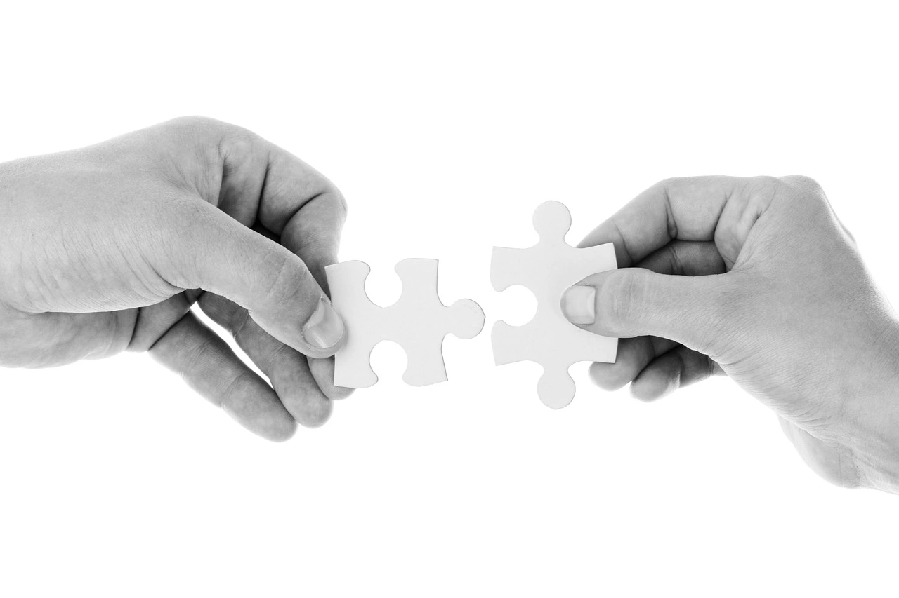

PiLOG
Serveis
Serveis
Servei de psicologia
- Trastorns de l’estat d’ànim: Es caracterizen per la presència d’alteracions emocionals, consistents en períodes prologants de tristesa, exaltació i/o eufòria.
- Trastorns d’ansietat: Es caracteritza per la presencia de preocupacions i pors intenses, excessives, i persistents sobre situacions diàries.
- Teràpia del dolor crònic: Es centra d’un tractament a nivell fisiològic, cognitiu, afectiu i conductual en el qual s’ensenya al pacient a utilitzar diferents tècniques de control i acceptació del dolor, així com també a la modificació de conductes que incrementen el dolor, per tal d’incrementar les activitats agradables. Així doncs, es procura normalitzar la vida de la persona que sent dolor per tal que recuperi de nou l’equilibri amb ell mateix i amb el seu entorn personal, familiar i laboral.
- Teràpia de parella: Es tracta d’un tipus de teràpia que té com a objectiu analitzar i tractar els conflictes surgits en una relació amorosa. Sabem que els canvis personals com externs afecten a la convivència de la parella i les parelles s’han d’anar adaptatns els canvis. Per això, a través de la teràpia de parella s’intenta proporcionar diferents recursos per aconseguir manejar les diferents situacions i procurar resoldre els conflictes.
- Teràpia de dol i pèrdues: L’objectiu es ajudar a la persona a superar la mort d’un ésser estimat o la desaparició d’algún element de la seva vida pel qual la persona sentia un fort aferrament.
- Addiccions: Té com a finalitat ajudar al pacient a entendre el seu comportament i emocions posant especial atenció a l’arrel del problema; es treballa el control d’impulsos, presa de decisions i els problemes personals propis de la persona.
- Teràpia infant-juvenil: Es tracta de donar eines per a millorar la gestió emocional i conductual dels menors. Poden tractar-se de sessions on es treballi directament amb les famílies o bé individualment, segons l’edat i les necessitats del nen o nena.
- Teràpia familiar (relacions matern/patern filials): La creació de vincles sans en el període de criança dels fills i filles, garanteixen un apropiat desenvolupament; les relacions matern/patern filials estableixen les bases de qui seran i com s’interrelacionaran amb el món i la resta de persones que ens envolten.
- Psicopedagogia: Es basa en identificar i afrontar les diferents problemàtiques i dificultats que influeixen en l’aprenentatge, tenint en compte les àrees cognitives, socioafectives, lectoescriptores i càlcul.
- Orientació educativa i laboral: Permet guiar les accions en funció de la personalitat de l’individu, tractant aspectes del desenvolupament i en correspondència amb les seves necessitats i interessos.
- Estimulació cognitiva: Conjunt de tècniques enfocades a millorar el funcionament de la memòria, l'orientació, l'atenció, el llenguatge i les funcions executives.
Servei de logopèdia
- Dificultats de lectoescriptura: hi són presents quan l’aprenentatge de la lectura o de l’escriptura no té l’evolució esperada segons l’edat. Aquest fet pot comportar retards a l’aprenentatge de les diferents àrees o aptituds acadèmiques bàsiques que es porten a terme durant el període de desenvolupament, que coincideix amb l’etapa escolar.
- Alteracions del llenguatge oral (expressiu i receptiu): són alteracions que dificulten la comunicació oral tant per a parlar (expressiu) com per a entendre el que diuen altres persones (receptiu).
- Trastorn del llenguatge expressiu: no començar a parlar fins als dos anys o tenir dificultats per explicar diferents esdeveniments.
- Trastorns del llenguatge receptiu: dificultats per a seguir instruccions senzilles o per organitzar la informació que ha sentit.
- Alteracions de la fluïdesa verbal o disfèmia: es caracteritza pel fet que el subjecte sap exactament el que ha de dir, però és incapaç de dir-ho amb fluïdesa davant la presència d’alteracions en l’articulació i ritme de la parla, bloquejos, repeticions i prolongacions de síl·labes i paraules de manera involuntària.
- Reeducació de la veu: es tracta d’un aprenentatge vocal i corporal per tal de millorar la funció de la laringe (caixa de la veu) quan aquesta es troba afectada amb l’objectiu d’aconseguir o satisfer les necessitats ocupacionals, emocionals i socials.
- Teràpia miofuncional: té com a objectiu aconseguir la normalització i l’equilibri múscul-esquelètic que contribueixi i/o afavoreixi a una adequada funcionalitat dels processos de la parla, deglució, fonació i respiració. Es treballa a partir de la reeducació de la musculatura facial, patró respiratori i l’eliminació de mals hàbits, possibilitant un desenvolupament i creixement anatòmic normalitzat.